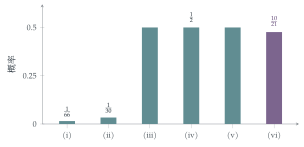

STEP I 2007，第 13 題
繼續之前，請先閱讀題目（原題為英文）。題目載於 STEP Support Programme 的題目資料庫： step.maths.org/questions/07-s1-q13
引子
「已知」（given that）是概率中最危險的字眼。這道題最後四個部分的說法聽起來幾乎一模一樣：編號為 3 的圓片最先被取出；編號為 3 的圓片被取出；最先取出的是一塊有編號的圓片；取出的圓片中有一塊有編號。其中三個的答案都是 \(\frac12\)，第四個卻不是。
這個分別，正正就是著名的「男孩還是女孩」謎題背後的分別（一個家庭有兩個孩子，其中至少一個是男孩；兩個都是男孩的機會有多大？）。這道謎題難倒了一代又一代的學生，也難倒了不少專業數學家。當中的教訓是：條件（condition）是一個精確的陳述，說明哪些結果仍然可能出現；而資訊是怎樣得來的，與資訊本身同樣重要。
動筆之前
從十一塊圓片中取出四塊。對於「四塊都有編號」這個事件（event）而言，抽取的次序有沒有影響？四塊圓片組成的等可能（equally likely）組合共有多少個？
每一個由四塊圓片組成的組合被抽中的可能性都相同，所以我們可以不理會次序：共有 \(\binom{11}{4} = 330\) 個等可能的組合。
逐步解題
階段 1 沒有條件
由四塊有編號圓片組成的組合有 \(\binom54 = 5\) 個，所以 \[\mathrm{P}(\text{四塊都有編號}) = \frac{5}{330} = \frac{1}{66}.\]
階段 2 3 號最先取出
編號為 3 的圓片最先被抽出之後，餘下的三次抽取是怎樣的？
其餘三塊圓片是從餘下十塊（四塊有編號、六塊空白）中隨機抽出的三塊，全部 \(\binom{10}{3} = 120\) 個組合都是等可能的。所以 \[\text{(ii)}\quad \frac{\binom43}{120} = \frac{4}{120} = \frac{1}{30}, \qquad \text{(iii)}\quad \frac{\binom41\binom62}{120} = \frac{4 \times 15}{120} = \frac12,\] 因為在 (iii) 中，其餘三塊之中必須恰好有一塊有編號。
階段 3 3 號被取出（在某一次）
編號為 3 的圓片是在哪一次抽出的，有沒有關係？已知 3 號在四塊之中，對其餘三塊你能說些甚麼？
根據對稱性（symmetry），已知這四塊圓片中包含 3 號，其餘三塊就是從餘下十塊中隨機抽出的三塊，與第 2 階段完全一樣。所以 (iv) 的答案也是 \(\frac12\)。
階段 4 最先取出的是有編號的圓片
已知第一塊圓片有編號（不論是哪個號碼），其餘三塊同樣是從餘下十塊圓片中隨機抽出的三塊，當中四塊有編號、六塊空白。所以 (v) 的答案也是 \(\frac12\)。
階段 5 取出的圓片中有一塊有編號
現在的條件是「四塊之中至少有一塊有編號」。這與之前任何一個條件相同嗎？330 個組合之中有多少個符合這個條件？
這個條件有所不同：它沒有指明任何一塊特定的圓片。只有 \(\binom64 = 15\) 個組合完全沒有編號圓片，所以有 \(315\) 個符合條件。其中 \(\binom52\binom62 = 10 \times 15 = 150\) 個恰好包含兩塊有編號的圓片。所以 \[\text{(vi)}\quad \frac{150}{315} = \frac{10}{21}. \qed\]
為甚麼 (vi) 與 (v) 不同？在 (v) 中，我們知道哪一塊圓片有編號（第一塊），而其餘三塊不受限制。在 (vi) 中，我們只知道有某一塊圓片有編號。含有三塊或四塊編號圓片的組合，可以用更多方式滿足「某一塊圓片有編號」，所以它們不會像在 (v) 中那樣比重偏低。

回顧
條件會收窄樣本空間（sample space）。\(\mathrm{P}(A \mid B)\) 是 \(B\) 的結果之中同時屬於 \(A\) 的比例。
對稱性可以省功夫。3 號是最先抽出，還是在某一次抽出，並無分別，因為所有位置的地位都相同。
「特定的一個」不等於「至少一個」。聽起來相似的條件，選出來的結果集合可以大不相同。
背後的數學
男孩還是女孩的謎題
馬丁·加德納（Martin Gardner）在 1959 年提出這個問題：史密斯先生有兩個孩子，其中至少一個是男孩；兩個都是男孩的概率是多少？列出等可能的家庭組合 BB、BG、GB、GG，剔除 GG 後剩下三個，其中一個是 BB：答案是 \(\frac13\)。但如果我們知道年長的孩子是男孩，答案就是 \(\frac12\)。這正是我們這道題第 (vi) 和第 (v) 部分的縮影。加德納後來承認，他最初提出的問題含糊不清：答案取決於我們是怎樣得知有一個男孩的。如果我們隨機遇上其中一個孩子，而他是男孩，答案是 \(\frac12\)；如果我們問「你有沒有至少一個兒子？」而對方回答有，答案就是 \(\frac13\)。概率取決於產生資訊的過程，而不僅是資訊本身。
蒙提霍爾問題（Monty Hall）
概率中爭議最多的謎題，背後也是同一個教訓。在一個遊戲節目中，三道門的其中一道後面有一輛汽車。你選了 1 號門。主持人知道汽車在哪裏，他必定會打開另外兩道門的其中一道，讓你看到門後是一隻山羊，並且必定會讓你選擇是否換門；當汽車就在你所選的門後，以致他有選擇餘地時，他會在另外兩道門之間隨機挑選。他打開了 3 號門，並讓你改選 2 號門。你應該換嗎？應該：換門後勝出的概率是 \(\frac23\)。主持人選哪道門並非隨機；這取決於汽車的位置，因而帶有資訊。確切的規則十分重要。如果主持人只要可以就一定打開 3 號門，那麼看到 3 號門打開，1 號門和 2 號門就變得同樣可能，換門後勝出的概率只有 \(\frac12\)；然而，一個事先決定必定換門的參賽者，仍然有 \(\frac23\) 的機會勝出，因為換門勝出，恰好就是第一次選錯的時候。Marilyn vos Savant 在 1990 年於雜誌專欄中給出這個答案時，收到數以千計的來信指她錯了，其中有些更是出自數學家之手。用電腦模擬一次，或者仔細列出各個等可能的情況，就可以解決爭議。
條件概率（conditional probability）的系統化基礎，是由托馬斯·貝葉斯（Thomas Bayes）和皮埃爾–西蒙·拉普拉斯（Pierre-Simon Laplace）奠定的：貝葉斯的論文在他死後於 1763 年發表，而拉普拉斯則在 1774 年以一般形式寫出了現稱為貝葉斯定理（Bayes’ theorem）的法則。安德烈·柯爾莫哥洛夫（Andrey Kolmogorov）在 1933 年提出的公理（axioms），是現今每一個大學課程的起點，當中定義 \(\mathrm{P}(A \mid B) = \mathrm{P}(A \cap B)/\mathrm{P}(B)\)，而概率論的其餘部分都建基於這個定義之上。下一節 第 12.2 節 會展示貝葉斯定理在實際應用中的作用。
思維技巧
計算條件概率之前，先確切寫下哪些結果符合條件。問一問資訊是怎樣得來的。
在大學裏，條件概率和條件期望（conditional expectation）是概率與統計中最重要的工具之一，也是最常出錯的地方。把樣本空間寫出來，至少就一個小規模的情況寫出來，是最好的防範方法。
延伸練習
推廣。設有 \(b\) 塊空白圓片和 \(n\) 塊有編號的圓片，從中抽出 \(k\) 塊，證明 (iv) 和 (v) 的答案永遠相等，並求出 (vi) 在甚麼情況下與它們相等。
星期二出生的男孩。一個家庭有兩個孩子，其中至少一個是在星期二出生的男孩。證明兩個都是男孩的概率是 \(\frac{13}{27}\)。（列出 \(14 \times 14\) 個等可能的情況，或者用巧妙的方法計數。）
蒙提霍爾問題。列出各個結果，驗證 \(\frac23\) 這個答案。如果主持人不知道汽車在哪裏，隨機打開另外兩道門的其中一道，而門後剛好是一隻山羊，那又如何？
兩張 A。一手 \(13\) 張的橋牌中至少有一張 A。這手牌中至少有兩張 A 的概率是多少？試與已知這手牌中有葵扇 A 時的概率比較。
延伸閱讀
Jason Rosenhouse, The Monty Hall Problem（Oxford University Press）。講述這道謎題、它的歷史，以及它的眾多變化。
Geoffrey Grimmett & Dominic Welsh, Probability: An Introduction（Oxford University Press），有關條件概率的各章。
Joseph Blitzstein & Jessica Hwang, Introduction to Probability（CRC Press；可於網上免費閱讀）。對條件概率的處理十分出色，並載有許多悖論。